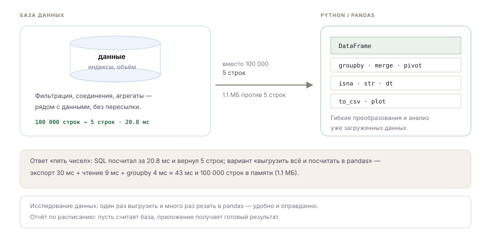

SQL или pandas: что где делать Два инструмента для одной задачи — но с разной ценой
Мы умеем и то, и другое. Остался главный инженерный вопрос: где считать. Ответ почти всегда начинается со слов «зависит от объёма и от того, что будет дальше» — и дальше уже конкретика.
01Зачем это backend-разработчику
- Производительность: выгрузить миллион строк в приложение, чтобы посчитать пять чисел, — дорого.
- Память: DataFrame на миллионы строк может уронить процесс.
- Читаемость: агрегат в SQL — одна строка запроса; то же в pandas — цепочка методов.
- Собеседование: «где считать агрегаты», «почему не выгружаете всё в pandas», «как избежать N+1».
02Ассоциация-якорь: склад и верстак
База — склад. Там хранятся данные, есть индексы и погрузчики (агрегаты, соединения). Забирать на верстак (в pandas) нужно только то, что реально понадобится.
pandas — верстак. На нём удобно вырезать, склеивать, экспериментировать и рисовать. Но тащить на верстак весь склад — плохая идея.
03Ассоциативный ряд: восемь звеньев
- фильтр в SQLWHERE до выгрузки
- агрегат в SQLGROUP BY в базе
- соединение в SQLJOIN в базе
- мало строктолько нужное в память
- исследованиеpandas для гипотез
- сложные преобразованияmelt/pivot/str/dt
- визуализацияграфики и отчёты
- запись обратнорезультат в базу
04Схема: где что считать

05Как это устроено на самом деле
| Ситуация | Лучше | Почему |
|---|---|---|
| большие данные, нужен агрегат | SQL | данные не покидают базу |
| нужны индексы и конкурентный доступ | SQL | база оптимизирует план |
| отчёт по расписанию | SQL | стабильно и без памяти приложения |
| исследование, много гипотез | pandas | быстрые итерации без миграций |
| сложные преобразования формы | pandas | melt/pivot/explode гибче |
| маленькая выгрузка, графики | pandas | удобно и наглядно |
Гибрид — норма
Типичный путь: база фильтрует и агрегирует → в pandas приходит небольшой результат →
приложение строит отчёт. Плохо, когда всё наоборот: приложение тащит сырые строки, чтобы
посчитать SUM, который база сделала бы за миллисекунды.
N+1 — отдельная болезнь
Цикл «для каждого пользователя — отдельный запрос» превращается в сотни обращений к базе. Решение — один запрос с JOIN/GROUP BY или одна выгрузка нужных id и один запрос по ним.
06Лаборатория: честный замер
Фрагменты файлов
25_benchmark.sql и
25_benchmark.py.
Одна и та же задача на orders_big (100 000 строк, PostgreSQL 14)
и в pandas 3.0 на этой машине. Замер — ориентир, а не абсолют.
Вариант 1: считает SQL
SELECT user_id, SUM(quantity * price) AS revenue FROM orders_big o JOIN products p ON p.id = o.product_id GROUP BY user_id ORDER BY user_id;
Вариант 2: выгрузить всё и посчитать в pandas
Сначала выгружаем строки в CSV — это и есть цена «забрать всё на верстак»:
psql -d learning_shop -c "\copy ( SELECT o.user_id, o.quantity, p.price FROM orders_big o JOIN products p ON p.id = o.product_id ) TO '/tmp/big_orders.csv' CSV HEADER"
df = pd.read_csv("/tmp/big_orders.csv") # 100 000 строк, 1.1 МБ
df["revenue"] = df["quantity"] * df["price"]
result = df.groupby("user_id")["revenue"].sum()
Что показывают цифры
| Путь | Время | Что пересекло границу |
|---|---|---|
| SQL-агрегат | 20.8 мс | 5 строк |
| Экспорт + pandas | ~43 мс | 100 000 строк, 1.1 МБ |
На 100 000 строк разница примерно вдвое — не катастрофа. Но она растёт линейно с объёмом, а память pandas — тоже. На 10 миллионах строк вопрос «где считать» перестаёт быть вкусовым.
И наоборот: если данных мало и их нужно много раз резать по-разному, pandas выигрывает по скорости итераций. Поэтому в реальности выбирают по объёму и по числу вопросов к данным.
07Мост: одно и то же в двух мирах
SELECT p.category, SUM(o.quantity * p.price) AS revenue FROM orders o JOIN products p ON p.id = o.product_id GROUP BY p.category ORDER BY revenue DESC;
merged = orders.merge(products, left_on="product_id", right_on="id")
merged["revenue"] = merged["quantity"] * merged["price"]
merged.groupby("category")["revenue"].sum().sort_values(ascending=False)
Оба варианта правильные. Выбор — по объёму, частоте и тому, где удобнее поддерживать код.
08Шесть ошибок, на которых спотыкаются
Выгружается больше, чем нужно, — медленно и дорого по памяти.
Цикл по объектам с отдельным запросом на каждый.
То, что база делает с индексом, pandas делает в памяти.
Скрипт держит всё в памяти и падает при росте данных.
Десятки запросов на простые преобразования, которые pandas делает за один шаг.
SQL и pandas по-разному трактуют NULL в groupby и сравнениях.
09Вопросы с собеседования
Где считать агрегаты — в SQL или pandas?
По умолчанию в SQL: меньше данных покидает базу. В pandas — если данные уже загружены и нужны быстрые итерации.
Почему не стоит выгружать всё в pandas?
Пересылка и память растут линейно с объёмом; миллионы строк могут уронить процесс. База умеет фильтровать и агрегировать дешевле.
Что такое N+1?
Ситуация, когда для N объектов делается N дополнительных запросов. Решается JOIN или пакетным запросом.
Когда pandas лучше SQL?
Исследование, сложные преобразования формы, визуализация, данные из разных источников (CSV, API), быстрые гипотезы.
Когда SQL лучше pandas?
Большие данные, конкурентный доступ, отчёты по расписанию, необходимость индексов и транзакций.
Как переносить данные между ними?
Выгрузка результата запроса в DataFrame, запись результата обратно в таблицу; для больших объёмов — пакетами и с фильтром.
Как проверить, что перенос не исказил данные?
Сверить число строк, суммы и количество NULL до и после; повторить тот же агрегат в обоих мирах.
Что важнее — скорость или читаемость?
Зависит от контекста: для отчёта по расписанию — скорость; для исследования — читаемость и гибкость.
10Три задачи: сначала своя попытка
01 Пять чисел
Нужны выручка, число заказов и средний чек по месяцам. Где считать и почему?
Показать решение
В SQL: GROUP BY по месяцу, три агрегата, несколько строк результата.
SELECT DATE_TRUNC('month', created_at)::date AS month,
COUNT(*) AS orders,
SUM(quantity * price) AS revenue,
ROUND(AVG(quantity * price), 2) AS avg_check
FROM orders o JOIN products p ON p.id = o.product_id
GROUP BY 1 ORDER BY 1;
Почему. Данные не покидают базу; pandas получил бы миллионы строк ради той же таблицы.
02 Исследование
Нужно проверить пять гипотез о поведении пользователей. Где считать?
Показать ответ
В pandas: один раз выгрузить нужный срез (не всю базу), затем быстро проверять гипотезы без новых запросов. Не забыть про память и размер выгрузки.
03 N+1
Код: for user in users: orders = get_orders(user.id). Что не так и как исправить?
Показать ответ
Это N+1: N запросов вместо одного. Исправление — JOIN/GROUP BY или один запрос
WHERE user_id IN (...) с последующей группировкой в памяти.